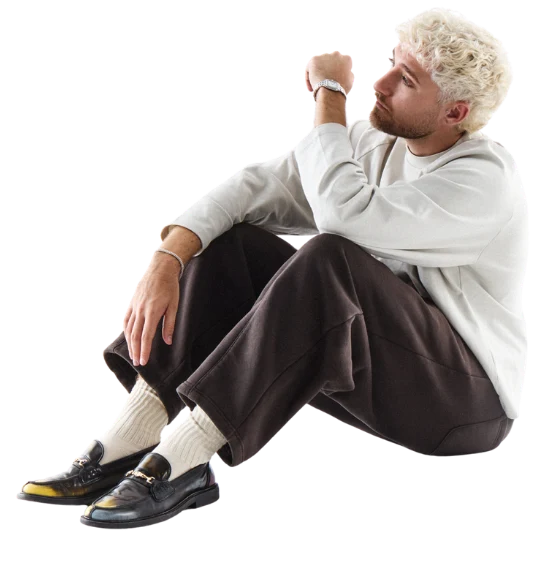
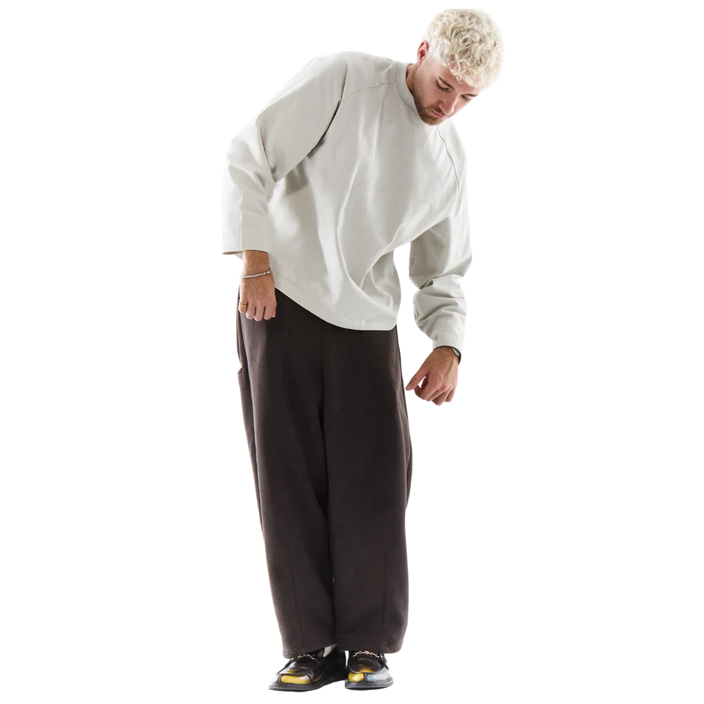

Quien Es Lucho RK?
Nacido en Gran Canaria, Lucho RK se ha convertido en uno de los artistas con mayor proyección de la nueva escena urbana en español. Su identidad musical destaca por una combinación de ritmos urbanos y latinos, melodías pegadizas y una versatilidad que le permite explorar diferentes estilos sin perder su esencia.
Tras sus primeros lanzamientos y el crecimiento de su presencia en la escena musical, Lucho ha continuado desarrollando una propuesta propia, conectando con un público cada vez más amplio y llevando su música a nuevos escenarios. Su evolución refleja una búsqueda constante de nuevos sonidos y formas de expresión.
Tras sus primeros lanzamientos y el crecimiento de su presencia en la escena musical, Lucho ha continuado desarrollando una propuesta propia, conectando con un público cada vez más amplio y llevando su música a nuevos escenarios. Su evolución refleja una búsqueda constante de nuevos sonidos y formas de expresión.


Con SORDO DE UN PIE, Lucho RK abre una nueva etapa artística en la que la experimentación y la personalidad musical adquieren un papel protagonista.
SORDO DE UN PIE parte de una idea tan irónica como simbólica: no siempre es necesario seguir el camino perfecto para llegar lejos. Los tropiezos, las imperfecciones y los cambios de dirección forman parte del proceso, convirtiéndose en una manera de avanzar sin miedo a salirse de lo establecido.
A través de este universo sonoro, Lucho RK recorre diferentes influencias, combinando reguetón y sonidos urbanos con matices latinos, melodías suaves y otras texturas musicales. El resultado es un proyecto que refleja su inquietud creativa y su intención de seguir evolucionando, explorando nuevos territorios sin dejar atrás aquello que lo hace único.
SORDO DE UN PIE parte de una idea tan irónica como simbólica: no siempre es necesario seguir el camino perfecto para llegar lejos. Los tropiezos, las imperfecciones y los cambios de dirección forman parte del proceso, convirtiéndose en una manera de avanzar sin miedo a salirse de lo establecido.
A través de este universo sonoro, Lucho RK recorre diferentes influencias, combinando reguetón y sonidos urbanos con matices latinos, melodías suaves y otras texturas musicales. El resultado es un proyecto que refleja su inquietud creativa y su intención de seguir evolucionando, explorando nuevos territorios sin dejar atrás aquello que lo hace único.